Signs: DirMotorway
45 items: Drawn 4, Pending owner decision 1, Placeholder 40
 2701Direction and junction ahead to a new housing developmentDrawn
2701Direction and junction ahead to a new housing developmentDrawn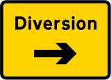
2702Start of temporary diversion routePlaceholder 2703Direction of temporary diversion route from junction aheadPlaceholder
2703Direction of temporary diversion route from junction aheadPlaceholder 2704Direction of temporary diversion routePlaceholder
2704Direction of temporary diversion routePlaceholder 2705Junction ahead leading to temporary diversion routes to the destinations shownPlaceholder
2705Junction ahead leading to temporary diversion routes to the destinations shownPlaceholder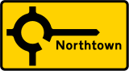
2706Roundabout ahead leading to a temporary diversion route to the destination shownPlaceholder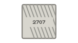
2707Direction of temporary diversion route to destination shownPlaceholder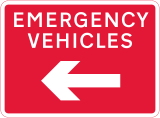
2708Junction ahead leading to route for emergency vehicles to a temporary incident control pointPlaceholder2710Permanently mounted sign indicating a route for emergency vehicles to a named emergency services incident pointPlaceholder 2711Direction to emergency exit for pedestrians from a tunnelPlaceholder
2711Direction to emergency exit for pedestrians from a tunnelPlaceholder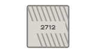
2712Location of fire rendezvous pointPlaceholder2713Direction to nearest emergency telephone on same side of the road(diagram shows blue background – for use on motorways)Placeholder 2713.1Distance ahead to emergency telephone in a parking place or emergency lay-byPlaceholder
2713.1Distance ahead to emergency telephone in a parking place or emergency lay-byPlaceholder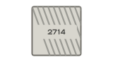
2714Side of emergency telephone boxPlaceholder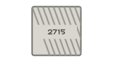
2715Back of emergency telephone boxPlaceholder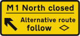
2716Junction ahead leading to a temporary diversion route, the direction along which is indicated by a symbol shown in Part VII of Schedule 13Placeholder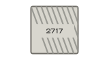
2717Location on a primary route given by route number and direction of travel, and direction of nearest emergency telephonePlaceholder 2901Start of motorway and point from which motorway regulations applyDrawn
2901Start of motorway and point from which motorway regulations applyDrawn 2902Motorway route confirmatory (with junctions)Placeholder
2902Motorway route confirmatory (with junctions)Placeholder 2902.1Motorway route confirmatory (variant)Placeholder
2902.1Motorway route confirmatory (variant)Placeholder 2903Motorway junction listPlaceholder
2903Motorway junction listPlaceholder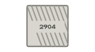
2904Motorway junction ahead, identified by the number shown on a black background, where the left hand lane of a motorway leads to another motorway and the other two lanes continue along the main motorway routePlaceholder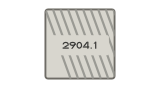
2904.1Motorway junction, identified by the number shown on a black background, where the left hand lane of a motorway leads to another motorway and the other two lanes continue along the main motorway routePlaceholder 2905Two motorway junctions ahead in quick succession, identified by the number shown on a black background, leading to the destinations and routes shown. The number of lanes on the motorway remains the same through the junctionPlaceholder
2905Two motorway junctions ahead in quick succession, identified by the number shown on a black background, leading to the destinations and routes shown. The number of lanes on the motorway remains the same through the junctionPlaceholder 2908Motorway junction layoutPlaceholder
2908Motorway junction layoutPlaceholder 2908.1Motorway junction layout (variant)Placeholder
2908.1Motorway junction layout (variant)Placeholder 2910Motorway number confirmatoryPlaceholder2911Motorway service areaPending owner decision
2910Motorway number confirmatoryPlaceholder2911Motorway service areaPending owner decision 2913Roundabout ahead leading from a motorway exit slip road to a primary and a non-primary routePlaceholder
2913Roundabout ahead leading from a motorway exit slip road to a primary and a non-primary routePlaceholder 2913.1Roundabout ahead leading from a motorway exit slip road to another motorwayPlaceholder
2913.1Roundabout ahead leading from a motorway exit slip road to another motorwayPlaceholder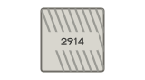
2914Termination of a motorway at a roundabout ahead leading to two primary routes and a non-primary routePlaceholder 2915Route to be followed at junction ahead on a motorway for destinations that are not otherwise shown on signs for that junctionPlaceholder
2915Route to be followed at junction ahead on a motorway for destinations that are not otherwise shown on signs for that junctionPlaceholder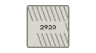
2920Motorway hospitalPlaceholder 2921Motorway policePlaceholder
2921Motorway policePlaceholder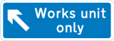
2922Exit from a motorway for works traffic onlyPlaceholder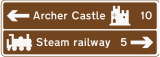
2924Motorway junction ahead leading to the tourist attractions shownPlaceholder 2925Roundabout ahead leading from a motorway exit slip road to the tourist attractions shownPlaceholder
2925Roundabout ahead leading from a motorway exit slip road to the tourist attractions shownPlaceholder 2926Junction ahead from a motorway exit slip road to the tourist attractions shownPlaceholder
2926Junction ahead from a motorway exit slip road to the tourist attractions shownPlaceholder 2927Motorway junction ahead leading to a town or geographical area containing a Tourist Information Point or Centre and several tourist attractionsPlaceholder2928Motorway sign indicating the boundary of an administrative area, a ceremonial area or an historic county areaPlaceholder
2927Motorway junction ahead leading to a town or geographical area containing a Tourist Information Point or Centre and several tourist attractionsPlaceholder2928Motorway sign indicating the boundary of an administrative area, a ceremonial area or an historic county areaPlaceholder 2929Motorway junction ahead leading to a route advised for goods vehicles to the destination shown, which may differ from that for other trafficPlaceholder
2929Motorway junction ahead leading to a route advised for goods vehicles to the destination shown, which may differ from that for other trafficPlaceholder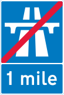
2930Regulations referred to in this column in respect of item 13 cease to apply aheadPlaceholder 2931End of motorwayDrawn
2931End of motorwayDrawn 2932Entrance to a motorway service area, maintenance compound or similar facility contained within a length of a motorway and indicating that Regulations in force under section 17 of the 1984 Act cease to apply at this pointPlaceholder
2932Entrance to a motorway service area, maintenance compound or similar facility contained within a length of a motorway and indicating that Regulations in force under section 17 of the 1984 Act cease to apply at this pointPlaceholder GANTRY_ADSMotorway overhead direction panel (family stand-in)Drawn
GANTRY_ADSMotorway overhead direction panel (family stand-in)DrawnFaces marked from GOV.UK: traffic sign images © Crown copyright (Department for Transport), Open Government Licence v3.0; converted from the EPS.